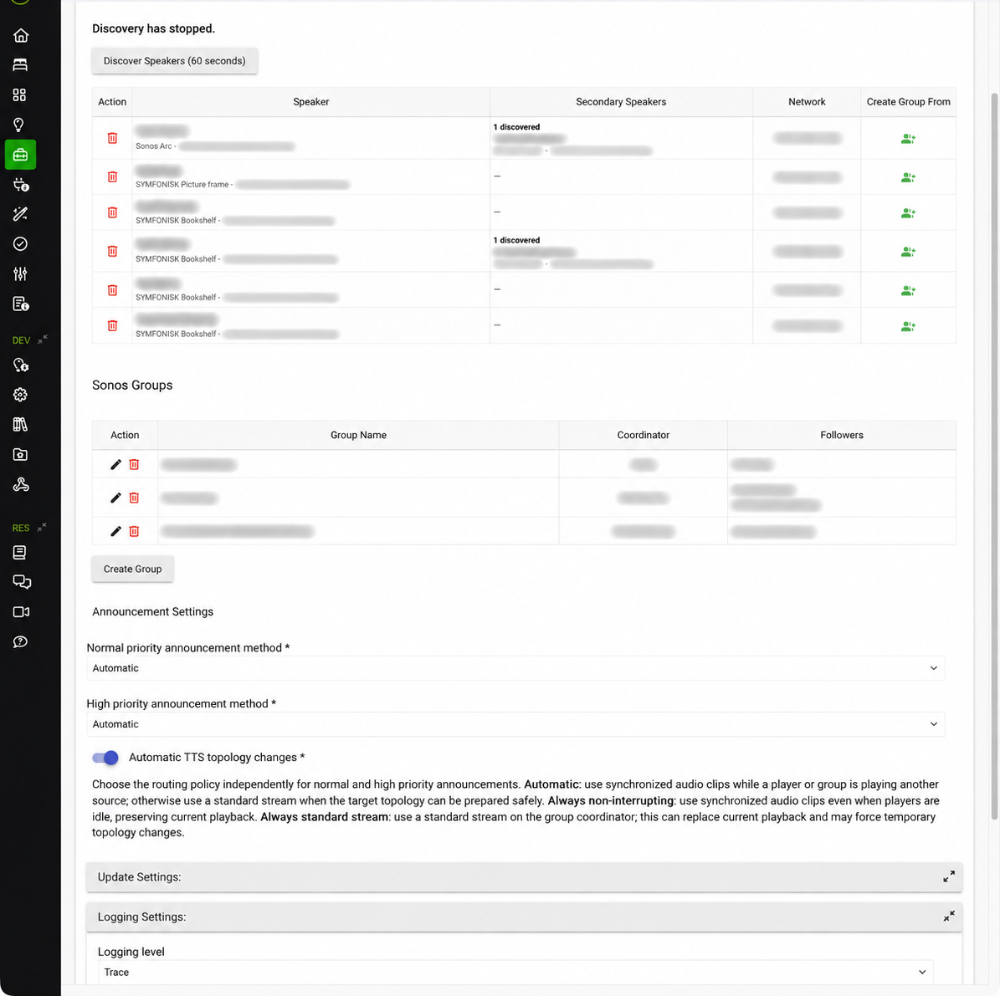
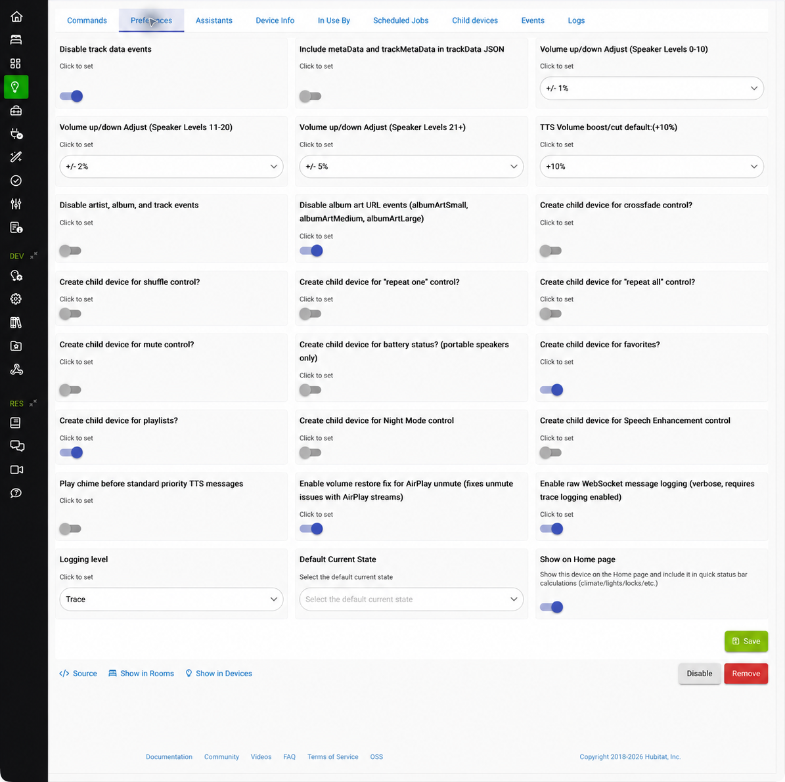
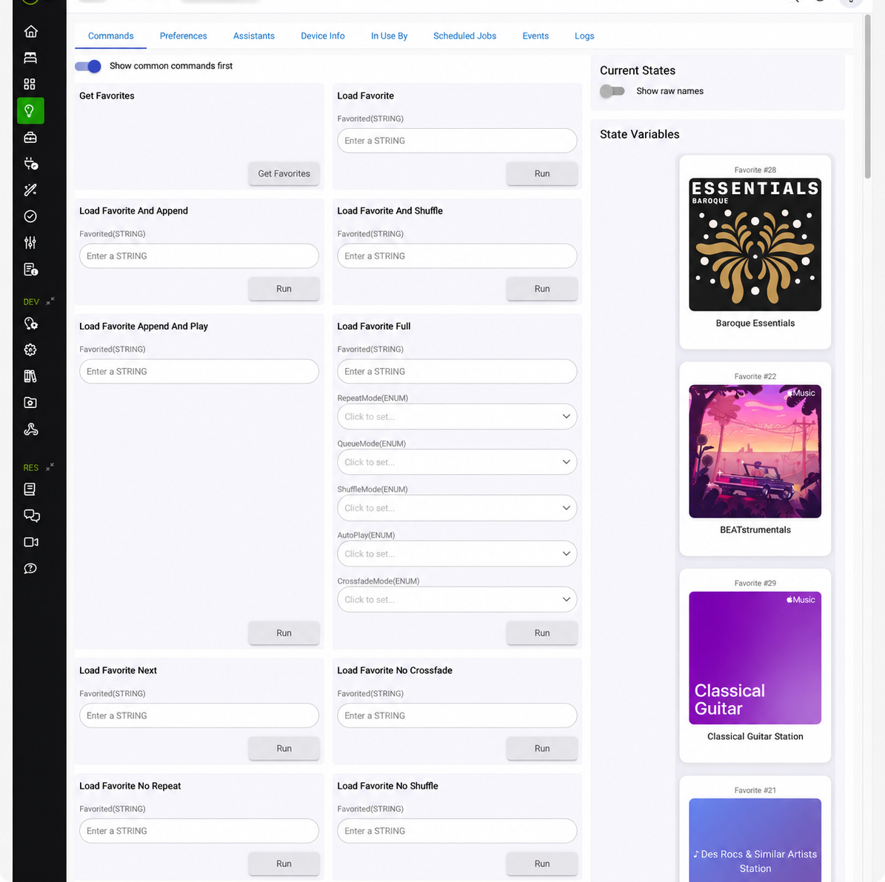
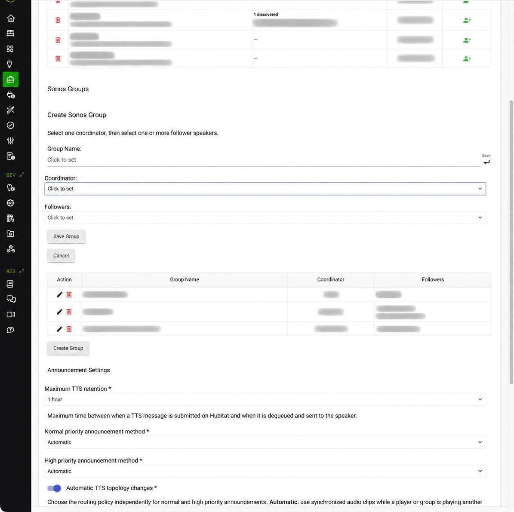
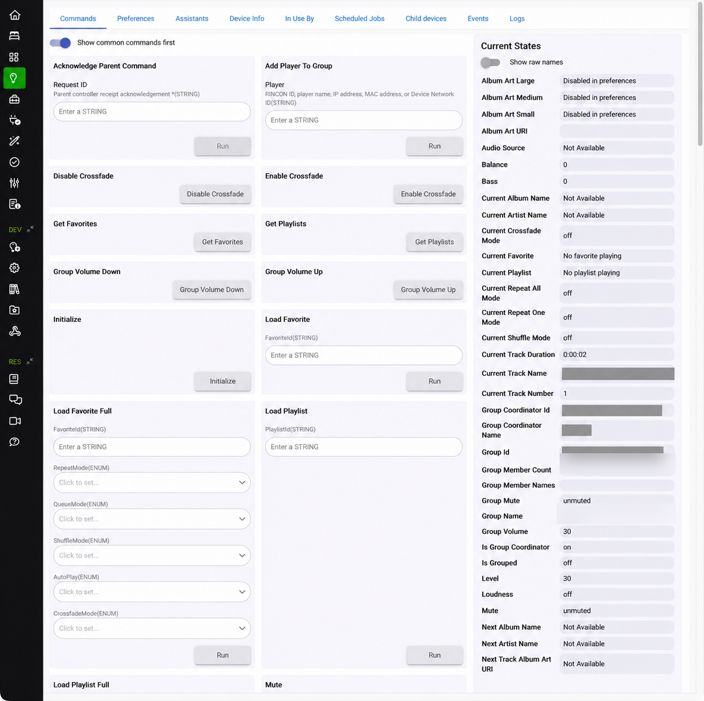

One device per selected Sonos player. Use it for transport, playback state, direct speaker controls, and player-specific commands.
01 · ORIENTATION
What Sonos Advanced adds
Sonos Advanced Controller is a Hubitat app and set of child drivers that expose Sonos players as Hubitat devices. It keeps the standard Music Player controls familiar while adding commands and state useful in automations: loading a Sonos favorite or playlist by ID, queue behavior, shuffle/repeat/crossfade, group membership, group volume, soundbar options, Line-In/TV selection, and configurable announcement handling.
A saved coordinator-plus-followers definition. Use it as a stable target for synchronized playback, group volume, and announcements.
Favorites, playlists, mute, shuffle, repeat, crossfade, battery, stereo right channel, Night Mode, and Speech Enhancement controls.
Runtime topology: A Sonos group is the speakers currently grouped together. A Sonos Advanced Group device is a Hubitat target representing the player set you want to control; it does not permanently lock speakers together.
02 · GETTING STARTED
Install and update
- Install Sonos Advanced Controller and its required package files through Hubitat Package Manager (recommended) or the project's release instructions.
- Open Apps → Sonos Advanced Controller. The main page includes discovery/player selection, Sonos Groups, announcement settings, logging, and interface settings.
- Keep the app and package drivers/libraries at compatible release versions. If installed with HPM, update with HPM; do not enable the app's automatic installer at the same time.
- Enter Hub Login Security credentials only if Hub Login Security is enabled and the app needs protected local hub endpoints.
Version care: HPM-managed installations should use HPM for updates; the app warns that using both paths can create version mismatches.
03 · DISCOVERY
Discover speakers and create players
The default interface has a speaker table and Discover Speakers (60 seconds). Discovery listens for local SSDP/mDNS responses, then shows available players and those already represented by Hubitat devices.
- Open the app's main page and select Discover Speakers (60 seconds).
- Wait for all players to appear. Discovery ends automatically after 60 seconds; run it again if a speaker was asleep or still booting.
- Select the players to manage, then create the selected player devices. Existing devices remain if selected; deselect a device only when you intend to remove it.
- Confirm the Sonos Advanced Player devices under Devices. Give them clear Hubitat labels for Rule Machine.

If a player does not appear, check that Hubitat and Sonos are on a reachable LAN/VLAN and multicast discovery is allowed. Retry while the player is awake.
04 · PLAYER DEVICES
Player device basics
The player driver implements Hubitat MusicPlayer, AudioVolume, MediaTransport, AudioNotification, SpeechSynthesis, and SwitchLevel. Common actions such as play(), pause(), stop(), nextTrack(), setLevel(), and setVolume() appear as normal device actions in Rule Machine.
Additional player commands include:
loadFavorite(favoriteId),loadFavoriteFull(...)loadPlaylist(playlistId),loadPlaylistFull(...)addPlayerToGroup(playerIdentifier),ungroupPlayer()setShuffle(on|off),setRepeatMode(...),setCrossfade(on|off)setGroupVolume(level, fadeSeconds),setGroupMute(muted|unmuted)selectLineIn(sourcePlayer),selectTV()playHighPriorityTTS(text, volume, voice),playHighPriorityTrack(uri, volume)setBass(),setTreble(),setBalance(),setLoudness()setNightMode()andsetSpeechEnhancement()on capable home-theater products
Useful current values include currentFavorite, currentPlaylist, currentTrackName, currentArtistName, audioSource, transportStatus, groupName, groupMemberNames, isGroupCoordinator, and shuffle/repeat/crossfade states. These can drive Rule Machine conditions.
IDs are not display names. Favorite and playlist parameters are service IDs. Use the Favorites and Playlist child devices to retrieve refreshed item lists and IDs.
05 · DEVICE PREFERENCES
Player preferences and optional child devices
Open a player device, select Preferences, change options, and save. Options for battery, stereo-pair, soundbar, or chime support appear only when relevant.
| Option | What it does / when to enable it |
|---|---|
| Volume up/down adjustments | Separate step sizes for current volume 0–10, 11–20, and 21+. Use smaller steps for fine control; setVolume/setLevel still set a specific percentage. |
| TTS volume boost/cut | Adjusts the default announcement level relative to current volume. Default is +10%; use negative values if speech is too loud. An explicit command volume is more direct. |
| Track/metadata events | Disable track data events to reduce traffic; include metadata in trackData JSON for advanced consumers. Artist/album/track and album-art URL event families can be filtered independently. |
| Crossfade, Shuffle, Repeat One/All, Mute children | Create separate child devices for dashboard tiles or simple switch-style automations. They mirror the player feature; the base player still has commands. |
| Favorites / Playlists children | Expose items and load actions separately. Enable for browsable cards and easier ID discovery in rules. |
| Battery Status child | Available only for portable speakers that report battery. |
| Right Channel child | Available for a stereo-paired speaker. Creates a child representing the right channel; leave off unless needed. |
| Night Mode / Speech Enhancement children | Available on compatible soundbars/home-theater players for dedicated TV listening controls. |
| Chime before TTS | Plays the configured chime before standard-priority TTS where audio clips are supported. |
| AirPlay unmute volume fix | Keep enabled to work around volume restoration behavior when unmuting AirPlay streams; disable only if it causes problems. |
| Raw WebSocket logging | Diagnostic option requiring Trace logging. It is verbose; use temporarily. |
| Logging level | Trace, Debug, Info, Warn, Error, Off. Info is a typical operating setting. |

Turning off event families may stop dashboards/rules that consume those events from updating. Change one filter at a time if dependencies are unclear.
06 · FAVORITES
Favorites: discovery, IDs, and playback behavior
Favorites are Sonos service items such as stations, service playlists, albums, or other saved content. Create/edit them in Sonos first, then refresh from the player or Favorites child.
- Enable Create child device for favorites? in player Preferences and save.
- Open Sonos Advanced Favorites. Refresh its list if needed. Cards show readable names; use the item's identifier in commands.
- Call
loadFavoriteorloadFavoriteFullon the player, or use a Favorites child shortcut.

loadFavoriteFull argument order: favoriteId, repeatMode, queueMode, shuffleMode, autoPlay, crossfadeMode.
Rule Machine · Run Custom Action
Device: Sonos Advanced Player — Living Room Command: loadFavorite favoriteId: (ID copied from Favorites list)
Full-command values:
- repeatMode:
repeat all,repeat one,off,unchanged - queueMode:
replace,append,insert,insert_next - shuffleMode:
off,on,unchanged - autoPlay:
trueorfalse - crossfadeMode:
onoroff
Favorites child shortcuts include loadFavoriteAndAppend, loadFavoriteNext, loadFavoriteAndShuffle, loadFavoriteQueued, loadFavoriteRepeatOne, loadFavoriteNoRepeat, loadFavoriteNoShuffle, loadFavoriteNoCrossfade, loadFavoriteAppendAndPlay, and loadFavoriteShuffleNoRepeat. Each accepts one favorite ID and applies a preset.
Empty list? Refresh the child and verify your Sonos account/service. Favorites change in Sonos, so refresh after editing them.
07 · PLAYLISTS
Sonos playlists
Sonos playlists are separate from Rule Machine's actions. Enable the Playlist child in player Preferences, then open Sonos Advanced Playlist and refresh. Use its playlist ID in commands.
Commands are loadPlaylist(playlistId) and loadPlaylistFull(playlistId, repeatMode, queueMode, shuffleMode, autoPlay, crossfadeMode). The Playlist child has shortcuts for append, play next, shuffle, queued/no-autoplay, repeat one, no repeat, no shuffle, no crossfade, append-and-play, and shuffle-without-repeat.
Append without starting playback
Command: loadPlaylistFull playlistId: (ID from Playlist child) repeatMode: repeat all queueMode: append shuffleMode: off autoPlay: false crossfadeMode: on
Use insert_next to put tracks after the current one; append puts them at the queue end. replace discards the current queue. insert adds content and moves playback to it. Test queue-changing rules on a noncritical target first.
08 · SAVED GROUP DEVICES
Create and maintain group devices
In the app's Sonos Groups section, select Create Group, enter a label, choose one coordinator, and choose one or more compatible followers. The editor filters out the coordinator from follower choices and excludes incompatible players where generation data is available. Save the group.
The coordinator owns the group queue; followers join it. Use descriptive Hubitat labels. Edit the saved definition to change membership; removing a group device removes that automation target while player devices remain.

The Group device also exposes favorite and playlist loading. Note that the Group driver's loadFavoriteFull signature differs from the Player driver's: favorite ID, play mode, starting track number, and starting time. Use the command form shown on the selected target's device page.
Group preferences:
- Control ungrouped speakers individually: volume controls can address each configured member if they are not currently grouped, instead of only the coordinator.
- Use proportional volume control: Sonos group volume preserves relative levels. Disable to set the same level directly on every speaker.
- Only update state when group is active: reduces state work when configured speakers are not together; useful when saved groups share players.
- Reset attributes when inactive: clears track/playback values when membership is inactive, preventing stale dashboard metadata.
- Chime before standard priority TTS: insert a chime before standard-priority speech.
- Logging level: independently filters group-device logs.
Commands include joinPlayersToCoordinator, removePlayersFromCoordinator, groupPlayers, ungroupPlayers, addPlayerToGroup(playerIdentifier), evictUnlistedPlayers, setVolumeZero, and refresh.
09 · DYNAMIC GROUPING
Build an ad-hoc group from Rule Machine
Every player has addPlayerToGroup. It accepts a target player's RINCON ID, name, IP address, MAC address, or Hubitat Device Network ID. Choose the player that should coordinate, then add each follower to it. No saved Group device is required.
1Choose the coordinator speaker that should own the active queue.
2In Rule Machine, select its player device and use
addPlayerToGroup.3Enter another player's unambiguous name or ID.
4Repeat for each follower, then send playback/volume commands to the coordinator.
Example: run addPlayerToGroup("Kitchen") on the Office device, wait for grouping to settle, then play on Office. When finished, call ungroupPlayer() on speakers that should leave or restore a known topology using a saved group operation.
Grouping changes live Sonos topology. Duplicate names can be ambiguous; prefer an exact device label or stable identifier. The operation can affect what is already playing.
10 · RULE MACHINE
Use Run Custom Action for commands Rule Machine doesn't list
Rule Machine's built-in media actions cover common Play, Pause, Stop, Set Volume, and Set Level actions. Integration-specific commands such as loadFavorite, loadPlaylist, queue control, grouping, Line-In, or Night Mode may not appear in the standard action wizard. Use Run Custom Action to call commands declared by the selected Sonos Advanced device.
- Open your rule and choose Select actions to run.
- Select Run Custom Action (wording may vary slightly by Rule Machine release).
- Choose the target device, for example a Sonos Advanced Player or Group.
- Select the exact command name from the driver command list.
- Enter arguments in the displayed order. Choose supported enum values; paste IDs/strings without quotation marks unless the field says otherwise.
- Save the action and rule, trigger it, and check the player state or current track.

Favorite: choose the player and loadFavorite, then enter the favorite ID. For full control, select loadFavoriteFull and fill all six arguments.
Playlist: select loadPlaylist and its ID, or use loadPlaylistFull.
Other useful custom actions: addPlayerToGroup, setRepeatMode, setShuffle, setCrossfade, selectLineIn, selectTV, setNightMode, setSpeechEnhancement, playHighPriorityTTS, and Group commands such as joinPlayersToCoordinator.
Parameter cheat sheet
loadFavorite: favoriteId loadPlaylist: playlistId addPlayerToGroup: playerIdentifier setShuffle: on | off setCrossfade: on | off setRepeatMode: off | repeat one | repeat all setGroupVolume: level (0–100), fade duration (seconds, optional) selectLineIn: source player (optional; defaults to this player)
Rule Machine cannot infer IDs from display names. Copy IDs from Favorites/Playlist. If a newly added command is missing from Rule Machine, refresh its device command list and verify driver versions.
11 · SPEECH & CLIPS
Announcements and audio clips
Player and group drivers implement speech/audio-notification commands. Standard-priority messages are for everyday announcements; high priority is an explicit routing path that can interrupt or route differently. Normal and high-priority policies are separate:
- Automatic: use synchronized clips while another source is active; use a standard stream while idle if topology can be prepared safely.
- Always non-interrupting: use synchronized clips to preserve current source playback.
- Always standard stream: play from the group coordinator as a normal stream. This can replace the queue and interrupt playback.
Automatic TTS topology changes temporarily groups speakers for a standard-stream announcement and attempts to restore topology. If disabled, the announcement may only reach the coordinator and its current members. Always-standard-stream with topology changes can temporarily regroup outside groups.
Maximum TTS retention controls how long queued text can wait before expiry. Use a longer time if requests queue behind long activity; use a shorter time if stale announcements would mislead.
Use playText for speech, playTextAndRestore to restore the prior queue/source, and playTextAndResume to resume prior playback. Audio URI commands include playTrack, playTrackAndRestore, and playTrackAndResume. Check the selected device's command signature for volume/voice arguments.
12 · APP SETTINGS
App-level settings
| Setting area | Purpose |
|---|---|
| Player discovery & selection | Find local speakers and create/remove player devices to match selection. |
| Sonos Groups | Create/edit/remove reusable coordinator-and-follower definitions. |
| Maximum TTS retention | Expiry window for queued speech requests. |
| Normal/high priority announcement method | Independent routing policies: Automatic, Always non-interrupting, Always standard stream. |
| Automatic TTS topology changes | Temporarily prepare live topology for stream announcements and restore afterward. |
| Update settings | Optional update checks/installation and local Hub Login Security credentials. Avoid app auto-install when HPM owns updates. |
| Logging level | Trace through Off. Increase detail during diagnosis. |
| Interface setting | Use old UI returns to the legacy page flow. New UI is the default. |
Maintenance controls can check available releases, compare installed file versions, and clean up duplicates. Library publishing is advanced legacy maintenance and is not needed for typical HPM installs.
13 · TROUBLESHOOTING
Common issues
Player missing from discovery
Run discovery while awake; confirm Hubitat and Sonos can communicate across the LAN, including multicast. Retry after network changes and check for an existing device whose IP changed.
Favorite or playlist does not load
Refresh its child list and copy the ID again. Confirm the service and item still exist. Try the simple command before queue options. Inspect player/group logs at Debug, then Trace if needed.
Run Custom Action has no command
Select a Sonos Advanced Player or Group rather than a generic speaker device. Save preferences and refresh the Rule Machine command list. Check app/driver release alignment.
Group playback or volume reaches unexpected rooms
Check coordinator and membership attributes. Saved groups are targets/definitions; live Sonos membership can change through playback or Sonos app actions. Refresh the group state.
Announcement interrupts music
Review normal/high-priority modes and whether the action uses a standard stream. Try the restore/resume variants. Enable automatic topology changes only if temporary regrouping is acceptable.
Too much event/log activity
Raise the logging threshold or turn it Off after diagnosis. Filter event families your rules do not consume. Raw WebSocket logging is verbose and should be temporary.
For support include app/driver version, concise reproduction, command and argument names (redact IDs), and relevant logs. Do not post credentials, tokens, full RINCON/MAC/IP values, or private speaker labels.